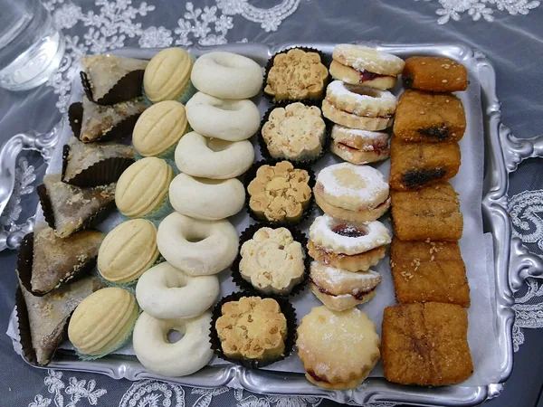

Aucun résultat. Essayez un autre mot ou un autre gouvernorat.لا توجد نتيجة. جرّب كلمة أو ولاية أخرى.
Par gouvernoratحسب الولاية
Arianaأريانة14Béjaباجة4Ben Arousبن عروس10Bizerteبنزرت15Gabèsقابس13Gafsaقفصة7Jendoubaجندوبة5Kairouanالقيروان9Kasserineالقصرين9Kébiliقبلي2Le Kefالكاف9Mahdiaالمهدية10La Manoubaمنوبة10Médenineمدنين12Monastirالمنستير16Nabeulنابل27Sfaxصفاقس16Sidi Bouzidسيدي بوزيد6Silianaسليانة4Sousseسوسة19Tataouineتطاوين10Tozeurتوزر3Tunisتونس27Zaghouanزغوان8
Vous êtes un professionnel ?هل أنت مهني؟
Soyez trouvé par les Tunisiens qui vous cherchent. Votre fiche existe peut-être déjà : ajoutez-la, vérifiez-la ou corrigez-la gratuitement.اجعل التونسيين الذين يبحثون عنك يجدونك. ربما بطاقتك موجودة: أضفها أو وثّقها أو صحّحها مجانًا.
Gratuit aussi sur nos sitesمجانًا أيضًا على مواقعنا
Se marier en Tunisie : les démarchesالزواج في تونس: الإجراءات →Papiers, étapes et délais, gratuitementالوثائق والمراحل والآجال، مجانًاVotre avisرأيك يهمّنا
Une remarque, une erreur, une idée ? Écrivez-nous : chaque message est lu.ملاحظة، خطأ، فكرة؟ اكتب لنا: كل رسالة تُقرأ.